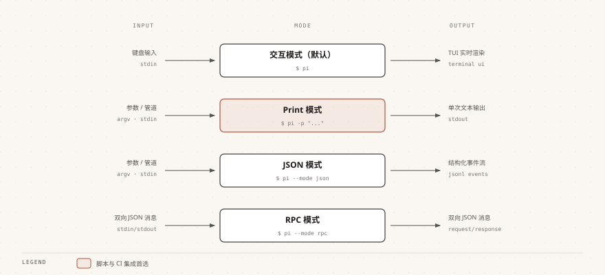

Pi Agent Modo no interactivo
Además del diálogo interactivo, Pi Agent ofrece tres modos no interactivos, adecuados para integración de scripts, procesos automatizados y comunicación entre programas.
Modo Print (-p)
El modo Print es el modo no interactivo más utilizado; ejecuta una pregunta-respuesta única, genera el resultado y sale.
Uso básico
La forma más simple es poner una pregunta directamente después de -p; la IA responde y sale.
$ pi -p "帮我总结一下这个项目的结构" 这是一个 TypeScript + Vite 项目，源码集中在 src/ 目录下。 入口文件是 src/main.ts，工具函数位于 src/utils/，共 18 个模块。
Usa @ para referenciar un archivo y haz que la IA lea el contenido del archivo especificado:
$ pi -p @README.md "这段文档的主要内容是什么" 这份 README 介绍了安装步骤、环境变量配置和三条常用命令。
Usa un pipe para pasar la salida de un comando directamente a la IA; ideal para procesar logs, documentos y otros textos:
$ cat README.md | pi -p "用三句话总结这段文字" 1. 项目要求 Node 20 以上版本。 2. 安装依赖后先把 .env.example 复制为 .env。 3. 日常调试用 npm run dev，发布构建用 npm run build。
@ también puede referenciar imágenes para que la IA analice el contenido de la imagen:
$ pi -p @screenshot.png "图片中显示的错误信息是什么" 截图中的报错是 Module not found: Can't resolve './utils/format'， 说明 src/index.ts 里的相对路径拼写有误。
Usa --name para nombrar la sesión; luego puedes continuar este hilo en el modo interactivo para seguir preguntando:
$ pi --name "快速审查" -p "审查 src/ 目录下的代码质量" 代码整体质量良好，有 3 处可以改进： 1. src/api/user.ts 缺少对分页参数的校验。 2. src/utils/format.ts 的日期格式化未处理时区。 3. src/db/query.ts 的裸抛异常建议补充错误码。
Especificar el modelo
Usa --provider junto con --model para especificar el modelo; también puedes combinar ambos en la forma provider/model.
$ pi --provider openai --model gpt-4o -p "帮我重构这段代码的逻辑" 重构建议：把 src/service/order.ts 中 120 行的 createOrder 拆成 校验参数、计算金额、落库三个函数，并为每个函数补充单元测试。
La siguiente forma combinada es exactamente equivalente a la anterior y es más corta de escribir:
$ pi --model openai/gpt-4o -p "帮我重构这段代码的逻辑"
Agregar dos puntos y un nivel de razonamiento después del nombre del modelo permite controlar la profundidad de pensamiento de esta llamada:
$ pi --model sonnet:high -p "这个复杂的算法有什么潜在问题" 主要风险有三点：递归深度没有上限会导致栈溢出； 缓存键未包含用户身份，存在越权读取的可能； 批量写入缺少事务包裹，失败时会出现半提交状态。
En --model, el:thinkingsufijo (por ejemplo, sonnet:high) y--thinkingel parámetro también puede establecer el nivel de razonamiento.
Se recomienda elegir una de las dos opciones para evitar dificultades de depuración cuando las dos formas son inconsistentes.
Usa --models para limitar el rango de modelos disponibles; separa varios modelos con comas:
$ pi --models "claude-*,gpt-4o" -p "审查代码" 审查完成：共发现 2 个阻塞问题和 5 个改进建议， 详细列表已按严重程度排序。
Control de herramientas
Controlar qué herramientas puede usar la IA mediante parámetros de línea de comandos es clave para que los modos no interactivos se ejecuten de forma segura en scripts.
Pi Agent incluye 7 herramientas integradas en plataformas no Windows: read, write, edit, bash, grep, find, ls.
En Windows, bash se sustituye por powershell.
Usa --tools como lista blanca para conservar solo las herramientas especificadas; por ejemplo, un modo de solo lectura que no modifica ningún archivo:
$ pi --tools read,grep,find,ls -p "审查代码不修改" 审查结果：共 4 个问题，其中 1 个涉及并发写入， 完整报告已输出到终端，本次未修改任何文件。
Usa --exclude-tools para excluir herramientas específicas:
$ pi --exclude-tools bash -p "分析代码但不执行命令" 分析结论：该模块的性能瓶颈在循环内的重复文件读取， 建议把目录列表提到循环外，预计可减少 80% 的 I/O。
Usa --no-builtin-tools para deshabilitar todas las herramientas integradas; la IA solo puede responder basándose en el contenido de la conversación, y las extensiones y herramientas personalizadas siguen disponibles:
$ pi --no-builtin-tools -p "纯问答" Quicksort 的平均时间复杂度是 O(n log n)， 最坏情况是 O(n^2)，出现在已排序数组上选取首元素为主元时。
Si necesitas deshabilitar también las extensiones y herramientas personalizadas, usa --no-tools.
Modo JSON (--mode json)
El modo JSON emite todos los eventos en formato JSON Lines (JSONL), adecuado para que los programas lo analicen y procesen.
$ pi --mode json "总结项目结构"
{"type":"session","version":3,"id":"019f8c2e-7a41-7b3d-9e5f-2c6a1d84b0e7","timestamp":"2026-08-31T02-40-11-000Z","cwd":"/Users/runoob/projects/runoob-demo"}
{"type":"agent_start"}
{"type":"turn_start"}
{"type":"message_start","message":{...}}
{"type":"message_update","usage":{...},"assistantMessageEvent":{...}}
{"type":"message_end","message":{...}}
{"type":"turn_end","message":{...},"toolResults":[]}
{"type":"agent_end","messages":[...]}
La primera línea es el encabezado de metadatos de la sesión, que registra la versión del formato, el ID de sesión, la marca de tiempo y el directorio de trabajo.
Cada línea posterior es un evento JSON independiente que contiene el tipo de evento y los datos correspondientes.
Este modo es adecuado para los siguientes escenarios:
| Escenario | Descripción |
|---|---|
| Pipeline de procesamiento de datos | Integrar el flujo de eventos en scripts de posprocesamiento, analizarlo y procesarlo línea por línea. |
| Monitoreo y análisis de comportamiento | Registrar y analizar cada llamada a herramientas y el proceso de decisión de la IA. |
| Cadena de herramientas personalizada | Construir tu propio flujo de trabajo automatizado sobre el flujo de eventos. |
Modo RPC (--mode rpc)
El modo RPC implementa la comunicación entre procesos mediante el protocolo JSONL por stdin/stdout.
Permite que otro programa envíe comandos a través de la entrada estándar y lea las respuestas desde la salida estándar.
El modo RPC admite un protocolo de UI extendido, lo que permite a los clientes remotos presentar elementos interactivos como diálogos de confirmación, listas de selección, etc.
Este modo es adecuado para los siguientes escenarios:
| Escenario | Descripción |
|---|---|
| Plugin de editor | Integrar Pi Agent en extensiones de editores como VS Code. |
| Frontend personalizado | Construir tu propia interfaz de Pi Agent basada en el protocolo RPC. |
| Servicio en segundo plano | Incrustar Pi Agent como un subproceso en un sistema más grande. |
Los modos RPC y JSON son características avanzadas orientadas a desarrolladores.
Como principiante, lo más probable es que solo necesites el modo interactivo y el modo Print.
Cuando necesites integrar Pi Agent en una cadena de herramientas, puedes volver y profundizar en estos dos modos.
Comparación de modos
Las diferencias entre los tres modos no interactivos se reflejan principalmente en la interactividad y el formato de salida; elige según la siguiente tabla.

| Modo | Comando | Interactividad | Formato de salida | Escenarios de aplicación |
|---|---|---|---|---|
| Modo interactivo | pi (predeterminado) | Diálogo en tiempo real | Renderizado TUI en terminal | Desarrollo diario, programación interactiva |
| Modo Print | pi -p | Respuesta única | Texto plano | Integración de scripts, consulta rápida |
| Modo JSON | pi --mode json | Flujo de eventos (no interactivo) | Flujo de eventos JSONL | Análisis por programas, procesamiento mediante pipelines |
| Modo RPC | pi --mode rpc | Comunicación continua | Protocolo bidireccional JSONL | Integración en editores, comunicación entre procesos |
Referencia rápida de parámetros CLI
La siguiente tabla enumera los parámetros comunes del comando pi clasificados por uso, y pueden combinarse con los comandos del modo interactivo.
| Categoría | Parámetro | Descripción |
|---|---|---|
| Opciones de modelo | --provider name | Especificar el proveedor de IA |
| Opciones de modelo | --model pattern | Especificar el ID del modelo; admite los formatos provider/id y :thinking |
| Opciones de modelo | --api-key key | Pasar directamente la API Key (prioridad más alta) |
| Opciones de modelo | --thinking level | Nivel de razonamiento: off/minimal/low/medium/high/xhigh/max |
| Opciones de modelo | --models patterns | Lista de modelos separados por comas; limita el rango del ciclo de Ctrl+P |
| Opciones de sesión | -c, --continue | Continuar la sesión más reciente |
| Opciones de sesión | -r, --resume | Explorar y seleccionar sesiones históricas |
| Opciones de sesión | --session path|id | Usar el archivo de sesión o UUID especificado |
| Opciones de sesión | --fork path|id | Bifurcar una nueva sesión desde la sesión especificada |
| Opciones de sesión | --name, -n name | Establecer el nombre visible de la sesión |
| Opciones de sesión | --no-session | No registrar la sesión |
| Opciones de sesión | --export <entrada> [salida] | Exportar la sesión como HTML (la ruta de salida puede omitirse) |
| Opciones de herramientas | --tools, -t list | Poner en lista blanca herramientas específicas |
| Opciones de herramientas | --exclude-tools, -xt list | Deshabilitar herramientas específicas |
| Opciones de herramientas | --no-builtin-tools, -nbt | Deshabilitar todas las herramientas integradas |
| Opciones de herramientas | --no-tools, -nt | Deshabilitar todas las herramientas (modo de solo conversación) |
| Opciones de recursos | -e, --extension source | Cargar extensión (puede repetirse) |
| Opciones de recursos | --skill path | Cargar Skill (puede repetirse) |
| Opciones de recursos | --theme path | Cargar tema (puede repetirse) |
| Otras opciones | -a, --approve | Confiar en los archivos locales del proyecto para esta ejecución |
| Otras opciones | --no-context-files, -nc | Deshabilitar la carga automática de AGENTS.md/CLAUDE.md |
Haz clic para compartir notas
<p style="font-size:14px;">¡Las notas deben ser una extensión del contenido de este artículo!</p><br> <p style="font-size:12px;"><a href="../tougao.html" target="_blank">Para enviar un artículo, haga clic aquí</a></p> <p style="font-size:14px;"><a href="../w3cnote/runoob-user-test-intro.html" target="_blank">Cómo obtener el código de invitación de registro</a></p> <h3 class="text-muted"><i class="fa fa-info-circle" aria-hidden="true"></i> ¡Debe <a href=";.html" class="runoob-pop">iniciar sesión</a> antes de compartir notas!</h3> <p><a href="../w3cnote/runoob-user-test-intro.html" target="_blank">Cómo obtener el código de invitación de registro</a></p>